<title>Brentwood Scenario Pilot</title>
<meta name="claude:viewport-fit-sides" content="cover">
<link rel="preconnect" href="https://fonts.googleapis.com">
<link rel="stylesheet" href="https://fonts.googleapis.com/css2?family=Barlow+Semi+Condensed:wght@500;700&family=Atkinson+Hyperlegible:ital,wght@0,400;0,700;1,400&family=JetBrains+Mono:wght@400;600&display=swap">
<style>
/* Layout: one reading column; each sample is a run of stages, pictures first, then the logic that grades them. */
:root{
  --bg:#f5f7f6; --surface:#ffffff; --fg:#17201d; --muted:#56635e; --line:#d6ddda;
  --accent:#0a6b4f;            /* road-sign green */
  --accent-soft:#e1f0ea;
  --minor:#8a5a00; --minor-bg:#fbefd4;
  --serious:#b0361c; --serious-bg:#fbe2dc;
  --danger:#ffffff; --danger-bg:#a3161a;
  --none:#3d4a8a; --none-bg:#e3e6f7;
  --flag:#7a4b00; --flag-bg:#fff3d6; --flag-line:#e6b65a;
  --display:"Barlow Semi Condensed","Arial Narrow",Arial,sans-serif;
  --body:"Atkinson Hyperlegible",-apple-system,"Segoe UI",Roboto,sans-serif;
  --mono:"JetBrains Mono",ui-monospace,Menlo,Consolas,monospace;
}
@media (prefers-color-scheme: dark){:root:not([data-theme="light"]){
  --bg:#0f1513; --surface:#161e1b; --fg:#e4ebe8; --muted:#9aa8a2; --line:#2a3632;
  --accent:#4cc79d; --accent-soft:#163229;
  --minor:#f2c46b; --minor-bg:#3a2c0e; --serious:#ff9d85; --serious-bg:#3d1a12;
  --danger:#ffffff; --danger-bg:#b3262a; --none:#b8c1ff; --none-bg:#20264a;
  --flag:#f2c46b; --flag-bg:#2e2410; --flag-line:#7a5a1e; color-scheme:dark}}
:root[data-theme="dark"]{
  --bg:#0f1513; --surface:#161e1b; --fg:#e4ebe8; --muted:#9aa8a2; --line:#2a3632;
  --accent:#4cc79d; --accent-soft:#163229;
  --minor:#f2c46b; --minor-bg:#3a2c0e; --serious:#ff9d85; --serious-bg:#3d1a12;
  --danger:#ffffff; --danger-bg:#b3262a; --none:#b8c1ff; --none-bg:#20264a;
  --flag:#f2c46b; --flag-bg:#2e2410; --flag-line:#7a5a1e; color-scheme:dark}
*{box-sizing:border-box}
body{background:var(--bg);color:var(--fg);font:16px/1.55 var(--body);
  padding-left:max(16px,env(safe-area-inset-left,0px));padding-right:max(16px,env(safe-area-inset-right,0px));padding-block:28px 64px}
main{max-width:980px;margin:0 auto;display:flex;flex-direction:column;gap:56px}
h1,h2,h3,h4{font-family:var(--display);font-weight:700;line-height:1.15;text-wrap:balance;margin:0}
h1{font-size:clamp(30px,6vw,44px)}
h2{font-size:clamp(24px,4.4vw,32px)}
h3{font-size:21px}
h4{font-size:15px;text-transform:uppercase;letter-spacing:.06em;color:var(--muted);font-weight:500}
p{margin:0;max-width:68ch}
section{display:flex;flex-direction:column;gap:20px}
.stack{display:flex;flex-direction:column;gap:12px}
.eyebrow{font-family:var(--display);font-weight:500;text-transform:uppercase;letter-spacing:.08em;font-size:14px;color:var(--accent)}
.muted{color:var(--muted)}
code,.mono{font-family:var(--mono);font-size:.86em}
header.top{display:flex;flex-direction:column;gap:10px}
.nav{display:flex;flex-wrap:wrap;gap:8px}
.nav a{font-family:var(--display);font-weight:500;font-size:15px;color:var(--accent);text-decoration:none;border:1px solid var(--line);background:var(--surface);padding:6px 12px;border-radius:999px}
.nav a:hover,.nav a:focus-visible{border-color:var(--accent);outline:none}

/* Sets */
.sets{display:grid;grid-template-columns:repeat(auto-fill,minmax(280px,1fr));gap:12px}
.set{background:var(--surface);border:1px solid var(--line);border-radius:10px;padding:14px 16px;display:flex;flex-direction:column;gap:8px;min-width:0}
.set .head{display:flex;gap:10px;align-items:baseline}
.letter{font-family:var(--display);font-weight:700;font-size:26px;color:var(--accent);line-height:1}
.set ol{margin:0;padding:0;list-style:none;display:flex;flex-direction:column;gap:5px;font-size:14px}
.set li{display:grid;grid-template-columns:2.4em 1fr auto;gap:6px;align-items:baseline}
.set li .id{font-family:var(--mono);font-size:12px;color:var(--muted)}
.st{font-family:var(--mono);font-size:11px;padding:1px 6px;border-radius:4px;white-space:nowrap}
.st.ready{background:var(--accent-soft);color:var(--accent)}
.st.check{background:var(--minor-bg);color:var(--minor)}
.st.blocked{background:var(--serious-bg);color:var(--serious)}
.st.opt{background:var(--none-bg);color:var(--none)}
.st.sample{background:var(--accent);color:var(--surface)}

/* Samples */
.sample{border-top:3px solid var(--accent);padding-top:22px}
.facts{display:grid;grid-template-columns:repeat(auto-fit,minmax(220px,1fr));gap:14px 24px}
.facts div{min-width:0}
.instr{font-family:var(--display);font-size:22px;font-weight:500;border-left:4px solid var(--accent);padding:4px 0 4px 14px}
.stage{display:flex;flex-direction:column;gap:12px;background:var(--surface);border:1px solid var(--line);border-radius:12px;padding:16px}
.stage .bar{display:flex;flex-wrap:wrap;gap:6px 14px;align-items:baseline}
.stage .t{font-family:var(--mono);font-size:13px;color:var(--muted)}
.shots{display:grid;grid-template-columns:repeat(auto-fit,minmax(260px,1fr));gap:10px}
figure{margin:0;display:flex;flex-direction:column;gap:4px;min-width:0}
figure img{width:100%;max-width:100%;aspect-ratio:1688/780;object-fit:cover;border-radius:6px;border:1px solid var(--line);cursor:zoom-in;display:block;background:var(--line)}
figcaption{font-size:13px;color:var(--muted)}
figcaption b{color:var(--fg);font-weight:700}
.answer{font-size:15px}
.answer b{color:var(--accent)}

.chips{display:flex;flex-wrap:wrap;gap:6px}
.chip{font-size:14px;padding:4px 10px;border-radius:6px;border:1px solid var(--line);background:var(--surface)}
.chip.new{border-style:dashed;border-color:var(--accent)}
.chip small{font-family:var(--mono);font-size:10px;color:var(--accent);margin-left:4px;text-transform:uppercase}
.seq{display:flex;flex-wrap:wrap;gap:4px;align-items:center;font-family:var(--mono);font-size:12.5px}
.seq span{padding:2px 7px;border-radius:4px;background:var(--accent-soft);color:var(--fg)}
.seq i{color:var(--muted);font-style:normal}
.seqs{display:flex;flex-direction:column;gap:8px}

.table-wrap{overflow-x:auto;border:1px solid var(--line);border-radius:10px;background:var(--surface)}
table{border-collapse:collapse;width:100%;font-size:14px;min-width:640px}
th,td{text-align:left;vertical-align:top;padding:9px 12px;border-bottom:1px solid var(--line)}
th{font-family:var(--display);font-weight:500;text-transform:uppercase;letter-spacing:.05em;font-size:13px;color:var(--muted)}
tr:last-child td{border-bottom:0}
td .msg{color:var(--muted);display:block;margin-top:3px}
.lvl{font-family:var(--mono);font-size:11px;padding:2px 7px;border-radius:4px;white-space:nowrap;font-weight:600}
.lvl.minor{background:var(--minor-bg);color:var(--minor)}
.lvl.serious{background:var(--serious-bg);color:var(--serious)}
.lvl.dangerous{background:var(--danger-bg);color:var(--danger)}
.lvl.none{background:var(--none-bg);color:var(--none)}

.flags{display:flex;flex-direction:column;gap:8px;background:var(--flag-bg);border:1px solid var(--flag-line);border-radius:10px;padding:14px 16px}
.flags h4{color:var(--flag)}
.flags ul{margin:0;padding-left:20px;display:flex;flex-direction:column;gap:6px}
ul.plain{margin:0;padding-left:20px;display:flex;flex-direction:column;gap:6px;max-width:72ch}

dialog{border:0;padding:0;background:transparent;max-width:min(96vw,1700px)}
dialog::backdrop{background:rgba(0,0,0,.85)}
dialog img{width:100%;height:auto;display:block;border-radius:6px}
dialog p{color:#fff;margin-top:8px;font-size:14px}
footer{font-size:13px;color:var(--muted)}
@media (prefers-reduced-motion:reduce){*{transition:none!important}}
</style>

<main>
<header class="top">
  <span class="eyebrow">Brentwood test centre · 89 Warley Hill · draft for review, 2 November 2026</span>
  <h1>Brentwood scenario pilot</h1>
  <p>Five planned sets along the reported journeys, then two finished samples. Nothing else is rendered until you have reviewed these two.</p>
  <nav class="nav"><a href="#sets">Five sets</a><a href="#s1">S1 Emerging</a><a href="#s2">S2 Roundabout</a><a href="#engine">Engine changes</a><a href="#questions">Your answers needed</a></nav>
</header>

<section id="sets">
  <h2>The five sets</h2>
  <p class="muted">Locations from OpenStreetMap (31 October 2026); the route screenshots guided coverage only, never lane markings or priority. Set D stops at six, and three scenarios are optional, rather than force weak or repeated situations.</p>
  <div class="chips" aria-label="Status key"><span class="st ready">ready</span><span class="muted" style="font-size:13px">map has what the answer needs</span><span class="st check">check</span><span class="muted" style="font-size:13px">one detail to confirm</span><span class="st blocked">blocked</span><span class="muted" style="font-size:13px">needs facts the map lacks</span></div>
  <div class="sets">
    <article class="set"><div class="head"><span class="letter">A</span><h3>Leaving the centre: Warley Hill, the station, Queen's Road</h3></div>
      <ol>
        <li><span class="id">A1</span><span>Centre exit on to Warley Hill: move off and emerge</span><span class="st check">check</span></li>
        <li><span class="id">A2</span><span>Signal crossing on Kings Road as it changes</span><span class="st check">check</span></li>
        <li><span class="id">A3</span><span>"Left before the station": pedestrian at the side road</span><span class="st check">check</span></li>
        <li><span class="id">A4</span><span>Queen's Road roundabout, first exit</span><span class="st sample">S2</span></li>
        <li><span class="id">A5</span><span>Same roundabout, second exit: lane and signals</span><span class="st check">check</span></li>
        <li><span class="id">A6</span><span>Queen's Road zebra: pedestrian about to step out</span><span class="st ready">ready</span></li>
        <li><span class="id">A7</span><span>Car edging out of Gresham Road</span><span class="st ready">ready</span></li>
        <li><span class="id">A8</span><span>Same roundabout from Queen's Road, bus at the stop</span><span class="st opt">optional</span></li>
      </ol></article>
    <article class="set"><div class="head"><span class="letter">B</span><h3>West: Kavanaghs Road and London Road</h3></div>
      <ol>
        <li><span class="id">B1</span><span>Kavanaghs Road end: emerge left, wait, look again</span><span class="st sample">S1</span></li>
        <li><span class="id">B2</span><span>Same junction, view right blocked: creep and peep</span><span class="st check">check</span></li>
        <li><span class="id">B3</span><span>Right into Kavanaghs Road across oncoming traffic</span><span class="st ready">ready</span></li>
        <li><span class="id">B4</span><span>Pull up on the left at a safe, legal place</span><span class="st check">check</span></li>
        <li><span class="id">B5</span><span>Move off from the pull-up, cyclist behind</span><span class="st ready">ready</span></li>
        <li><span class="id">B6</span><span>High Street lights on a stale green</span><span class="st check">check</span></li>
        <li><span class="id">B7</span><span>Honeypot Lane: emerge right across both lanes</span><span class="st ready">ready</span></li>
        <li><span class="id">B8</span><span>Behind a bus at a stop: pass or wait</span><span class="st opt">optional</span></li>
      </ol></article>
    <article class="set"><div class="head"><span class="letter">C</span><h3>Brook Street west: Wickes, Wigley Bush and Mascalls Lane lights</h3></div>
      <ol>
        <li><span class="id">C1</span><span>Lane and position to turn right at Wigley Bush lights</span><span class="st blocked">blocked</span></li>
        <li><span class="id">C2</span><span>Right on green, oncoming priority</span><span class="st check">check</span></li>
        <li><span class="id">C3</span><span>"Right, then right again": two close turns</span><span class="st check">check</span></li>
        <li><span class="id">C4</span><span>Turn into Wickes across oncoming traffic</span><span class="st check">check</span></li>
        <li><span class="id">C5</span><span>Forward bay park in Wickes</span><span class="st blocked">blocked</span></li>
        <li><span class="id">C6</span><span>Leave Wickes on to the A1023</span><span class="st check">check</span></li>
        <li><span class="id">C7</span><span>Mascalls Lane lights: amber with a car close behind</span><span class="st check">check</span></li>
        <li><span class="id">C8</span><span>Parallel park by the Aston Martin dealer</span><span class="st check">check</span></li>
      </ol></article>
    <article class="set"><div class="head"><span class="letter">D</span><h3>Brook Street roundabout, M25 junction 28</h3></div>
      <ol>
        <li><span class="id">D1</span><span>Westbound: lane for the Harold Wood exit</span><span class="st blocked">blocked</span></li>
        <li><span class="id">D2</span><span>Ring stop line at red, lane kept on green</span><span class="st blocked">blocked</span></li>
        <li><span class="id">D3</span><span>Moving out a lane before the exit</span><span class="st blocked">blocked</span></li>
        <li><span class="id">D4</span><span>Exit towards Harold Wood, cyclist on the left</span><span class="st blocked">blocked</span></li>
        <li><span class="id">D5</span><span>Eastbound back to Brentwood: lane choice</span><span class="st blocked">blocked</span></li>
        <li><span class="id">D6</span><span>Holiday Inn access after the roundabout</span><span class="st blocked">blocked</span></li>
      </ol>
      <p class="muted" style="font-size:13px">Signal-controlled, three-lane ring: every answer depends on lane arrows the map does not have.</p></article>
    <article class="set"><div class="head"><span class="letter">E</span><h3>Town centre and back to the centre</h3></div>
      <ol>
        <li><span class="id">E1</span><span>Kings Road / Chatham Way mini: right, car from the right</span><span class="st check">check</span></li>
        <li><span class="id">E2</span><span>Wilson's Corner: two minis close together</span><span class="st check">check</span></li>
        <li><span class="id">E3</span><span>Crown Street mini: car from the right signalling left</span><span class="st blocked">needs indicators</span></li>
        <li><span class="id">E4</span><span>High Street lights: left on green, pedestrians crossing</span><span class="st check">check</span></li>
        <li><span class="id">E5</span><span>Ingrave Road mini: left with a cyclist on the left</span><span class="st ready">ready</span></li>
        <li><span class="id">E6</span><span>Return through the Queen's Road roundabout, second exit</span><span class="st check">check</span></li>
        <li><span class="id">E7</span><span>Warley Hill / The Drive mini near the centre</span><span class="st ready">ready</span></li>
        <li><span class="id">E8</span><span>Turn into the centre and park</span><span class="st check">check</span></li>
      </ol></article>
  </div>
</section>

<!-- ================= S1 ================= -->
<section id="s1" class="sample">
  <span class="eyebrow">Sample S1 · Set B · Emerging</span>
  <h2>Kavanaghs Road on to London Road, turning left</h2>
  <p class="instr">"At the end of the road, turn left."</p>
  <div class="facts">
    <div class="stack"><h4>Location and approach</h4><p>The T-junction where Kavanaghs Road meets London Road (A1023), almost square. Approaching from the south-east in the left half of Kavanaghs Road. Chosen from your test 1 account: "exit from Kavanaghs Road, continue down to Brook Street".</p></div>
    <div class="stack"><h4>Start</h4><p>Stopped at the give way line, signalling left. Mirrors and signal already done on the approach. No look along London Road yet.</p></div>
    <div class="stack"><h4>Traffic (scripted, same every time)</h4><p><b>Blue car</b> from the right in the lane you join, 28 mph, not slowing. <b>White car</b> from the left in the far lane. <b>Silver car</b> well behind the blue car.</p></div>
  </div>

  <div class="stage">
    <div class="bar"><h3>Stage 1</h3><span class="t">t = 6 s</span></div>
    <div class="shots">
      <figure>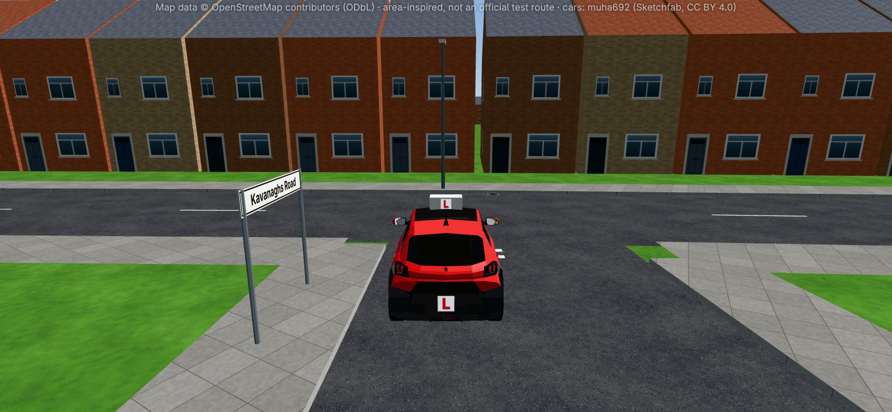<figcaption><b>Main view.</b> At the line, signalling left.</figcaption></figure>
      <figure><figcaption><b>Look right.</b> Blue car 43 m away, about 3.4 s.</figcaption></figure>
      <figure>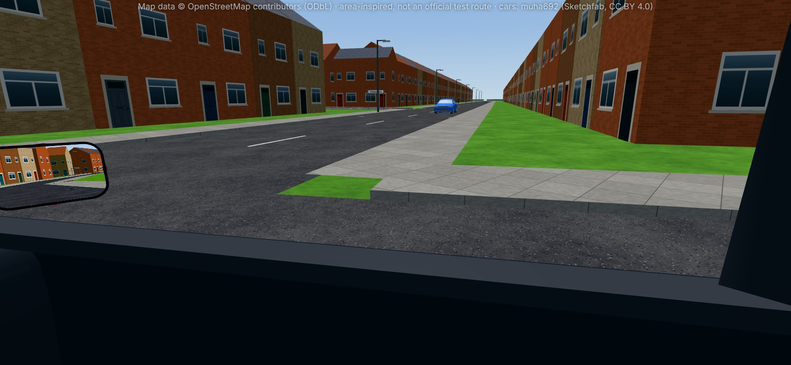<figcaption><b>Look right, 1 s later.</b> 30 m: it is not slowing.</figcaption></figure>
      <figure>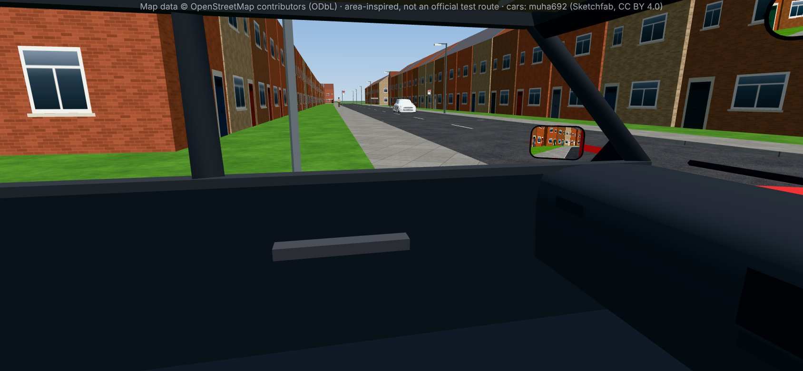<figcaption><b>Look left.</b> White car 39 m away in the far lane.</figcaption></figure>
      <figure>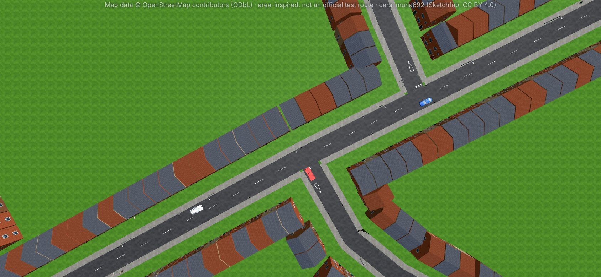<figcaption><b>Plan</b> (feedback screen). North up.</figcaption></figure>
      <figure><figcaption><b>Plan, 1 s later.</b></figcaption></figure>
    </div>
    <p class="answer"><b>Right answer:</b> look both ways, then give way. The blue car would have to slow if you came out.</p>
  </div>

  <div class="stage">
    <div class="bar"><h3>Stage 2</h3><span class="t">t = 11 s, after "Give way"</span></div>
    <div class="shots">
      <figure>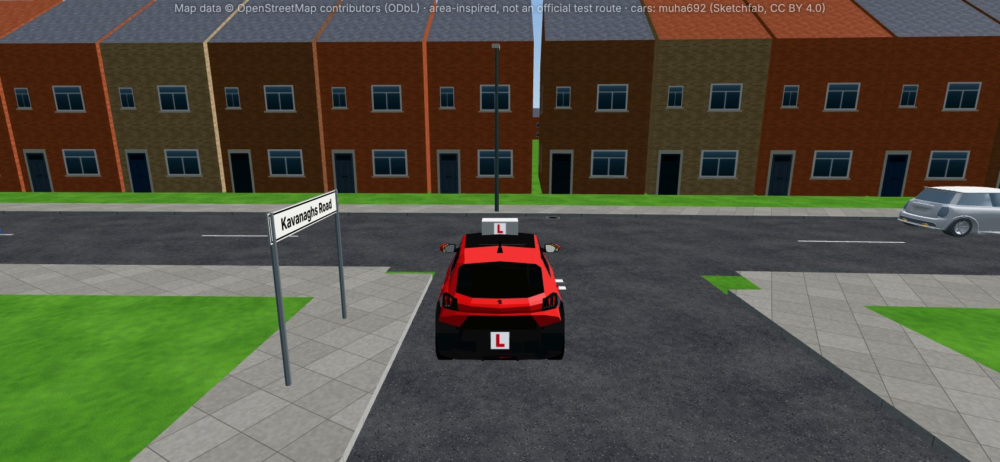<figcaption><b>Main view.</b> Still at the line.</figcaption></figure>
      <figure><figcaption><b>Look right.</b> Blue car gone; silver car 102 m, about 8 s.</figcaption></figure>
      <figure>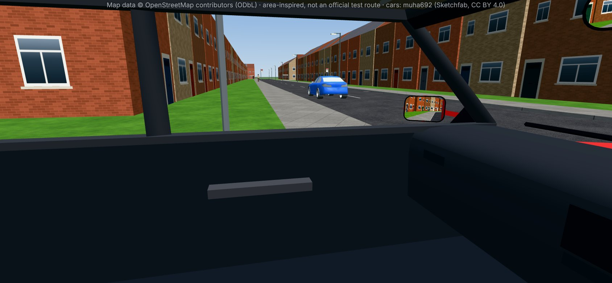<figcaption><b>Look left.</b> Clear.</figcaption></figure>
      <figure>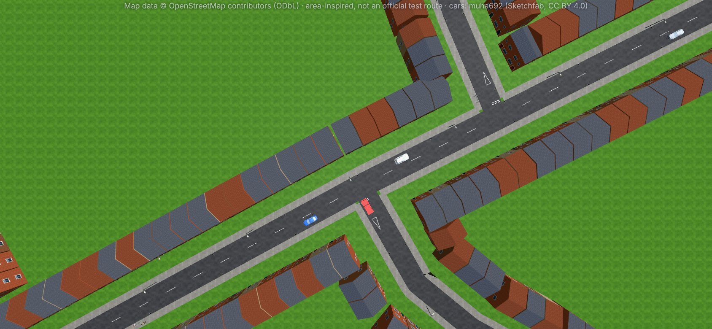<figcaption><b>Plan.</b></figcaption></figure>
    </div>
    <p class="answer"><b>Right answer:</b> look right again (the last look was before the wait), then turn left.</p>
  </div>

  <div class="stack"><h4>Action buttons</h4>
    <div class="chips">
      <span class="chip new">Look right<small>new</small></span><span class="chip new">Look left<small>new</small></span><span class="chip">Left mirror</span><span class="chip">Give way</span><span class="chip new">Creep forward<small>new</small></span><span class="chip">Signal right</span><span class="chip new">Sound horn<small>new</small></span><span class="chip">Turn left</span>
    </div>
  </div>

  <div class="stack"><h4>Accepted sequences</h4>
    <div class="seqs">
      <div class="seq"><span>look right</span><i>→</i><span>look left</span><i>→</i><span>give way</span><i>→</i><span>look right</span><i>→</i><span>turn left</span></div>
      <div class="seq"><span>look left</span><i>→</i><span>look right</span><i>→</i><span>give way</span><i>→</i><span>look right</span><i>→</i><span>turn left</span></div>
      <div class="seq"><span>look right</span><i>→</i><span>look left</span><i>→</i><span>look right</span><i>→</i><span>give way</span><i>→</i><span>look right</span><i>→</i><span>look left</span><i>→</i><span>turn left</span></div>
      <div class="seq"><span>left mirror</span><i>→</i><span>look right</span><i>→</i><span>look left</span><i>→</i><span>give way</span><i>→</i><span>look left</span><i>→</i><span>look right</span><i>→</i><span>turn left</span></div>
    </div>
    <p class="muted" style="font-size:14px">Scoring works from the rules below, so any safe order they allow passes. A look left in stage 2 and the left mirror at any time are fine, not required.</p>
  </div>

  <div class="stack"><h4>Distractors</h4>
    <ul class="plain">
      <li><b>Creep forward:</b> nothing hides the view here, and edging out with the blue car 3 s away can make its driver think you are pulling out.</li>
      <li><b>Signal right:</b> wrong direction, misleads the blue and silver cars and pedestrians.</li>
      <li><b>Sound horn:</b> nobody needs warning; the horn is not for claiming a gap.</li>
    </ul>
  </div>

  <div class="stack"><h4>Faults (graded on what the stage shows, recorded when they happen)</h4>
    <div class="table-wrap"><table>
      <thead><tr><th>When</th><th>Level</th><th>Feedback</th></tr></thead>
      <tbody>
        <tr><td>Turn left in stage 1</td><td><span class="lvl serious">serious</span></td><td><b>Pulled out in front of the blue car</b><span class="msg">Junctions, observation. It was about 3 s away in the lane you joined; coming out made it slow.</span></td></tr>
        <tr><td>Turn left with no look right in that stage</td><td><span class="lvl serious">serious</span></td><td><b>No look right before pulling out</b><span class="msg">Traffic in the lane you join comes from the right: look right last.</span></td></tr>
        <tr><td>Turn left in stage 2 having looked right only before the wait</td><td><span class="lvl minor">minor</span></td><td><b>Out-of-date look</b><span class="msg">Things change in 5 seconds: look right again just before you go.</span></td></tr>
        <tr><td>Give way in stage 1 before any look</td><td><span class="lvl minor">minor</span></td><td><b>Waited without looking</b><span class="msg">Recorded at that moment. A look afterwards does not undo it.</span></td></tr>
        <tr><td>Turn left having never looked left</td><td><span class="lvl minor">minor</span></td><td><b>No look left</b><span class="msg">An overtaking or turning vehicle could be in your way.</span></td></tr>
        <tr><td>Give way in stage 2</td><td><span class="lvl minor">minor</span></td><td><b>Missed a safe gap</b><span class="msg">Progress, undue hesitation. Only here: the picture shows about 8 s clear right and clear left. Waiting in stage 1 is never hesitation.</span></td></tr>
        <tr><td>Signal right</td><td><span class="lvl minor">minor</span></td><td><b>Wrong signal</b><span class="msg">Signals, correctly. Misleads drivers on London Road.</span></td></tr>
        <tr><td>Creep forward in stage 1</td><td><span class="lvl none">feedback only</span></td><td><b>No need to creep</b><span class="msg">Creep when parked cars, a bus or a hedge hide the road.</span></td></tr>
        <tr><td>Sound horn</td><td><span class="lvl none">feedback only</span></td><td><b>Horn not needed</b><span class="msg">Only to warn others of your presence.</span></td></tr>
      </tbody>
    </table></div>
  </div>

  <div class="flags"><h4>Uncertain, please confirm</h4>
    <ul>
      <li><b>Give way markings.</b> Not mapped. The scene draws a triangle on the approach and give way dashes.</li>
      <li><b>View right and left from the line.</b> No walls, hedges or parked cars are mapped at the corners, so the scene shows a clear view. If the real view right is restricted, the answer gains "creep and look again" (that becomes B2).</li>
      <li><b>Houses and gardens</b> are approximate. Road widths, the junction shape and traffic directions follow the map.</li>
    </ul>
  </div>
</section>

<!-- ================= S2 ================= -->
<section id="s2" class="sample">
  <span class="eyebrow">Sample S2 · Set A · Roundabout</span>
  <h2>Queen's Road roundabout from Kings Road, first exit</h2>
  <p class="instr">"At the roundabout, take the first exit."</p>
  <div class="facts">
    <div class="stack"><h4>Location and approach</h4><p>The three-arm roundabout where Kings Road meets Queen's Road, by the station. Approaching on Kings Road northbound from the station. First exit is Kings Road north, towards the High Street.</p></div>
    <div class="stack"><h4>Start</h4><p>About 35 m before the give way line, left lane, about 20 mph. The instruction has just been given; no mirrors, signal or slowing yet.</p></div>
    <div class="stack"><h4>Traffic (scripted, same every time)</h4><p><b>Grey car</b> close behind you (about 14 m). <b>Blue car</b> already on the ring from Queen's Road, going round to your exit at 16 mph. Nobody else.</p></div>
  </div>

  <div class="stage">
    <div class="bar"><h3>Stage 1</h3><span class="t">t = 4 s, 35 m out</span></div>
    <div class="shots">
      <figure>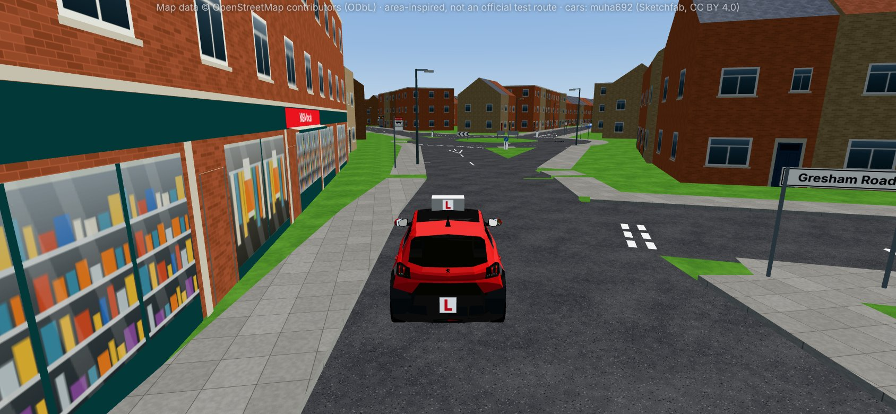<figcaption><b>Main view.</b> Roundabout ahead, grey car behind.</figcaption></figure>
      <figure>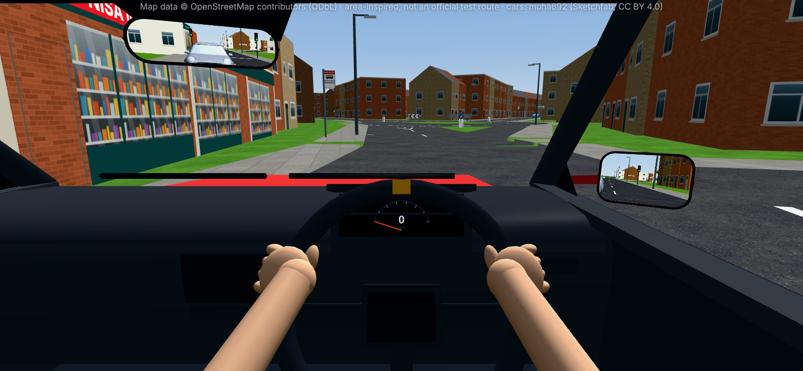<figcaption><b>Interior mirror.</b> The grey car, close.</figcaption></figure>
      <figure>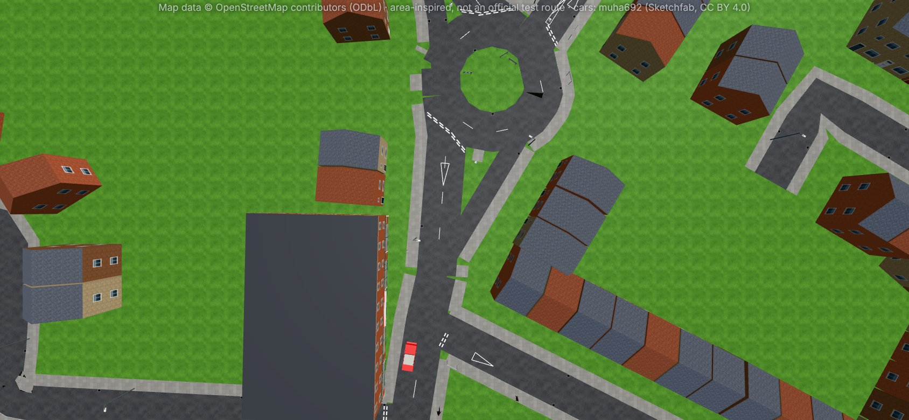<figcaption><b>Plan.</b></figcaption></figure>
    </div>
    <p class="answer"><b>Right answer:</b> interior and left mirrors, signal left, slow down in good time.</p>
  </div>

  <div class="stage">
    <div class="bar"><h3>Stage 2</h3><span class="t">t = 14 s, at the line, after "Slow down"</span></div>
    <div class="shots">
      <figure>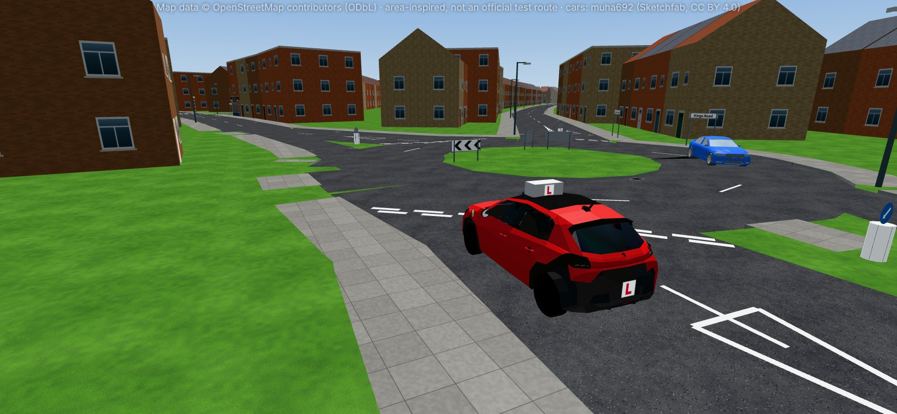<figcaption><b>Main view.</b> Blue car coming round, about 2.4 s from your entry.</figcaption></figure>
      <figure>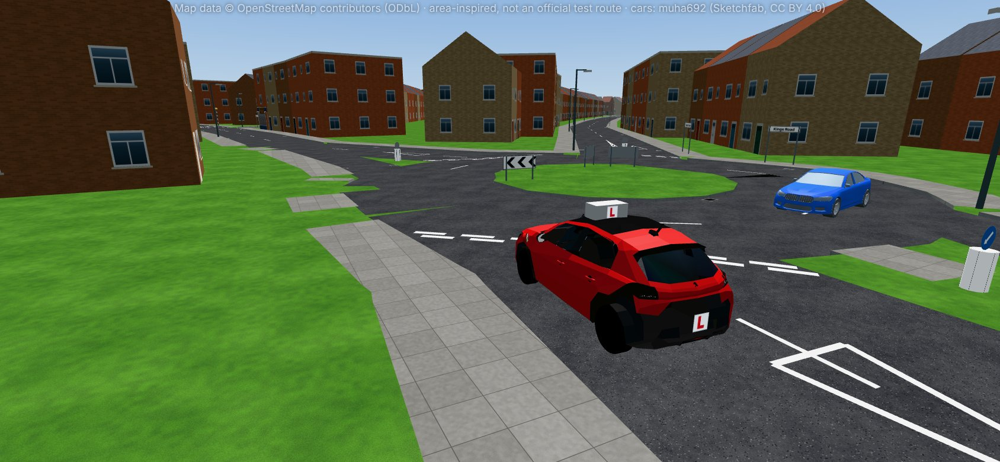<figcaption><b>1 s later.</b> About 1.6 s: it is coming across.</figcaption></figure>
      <figure>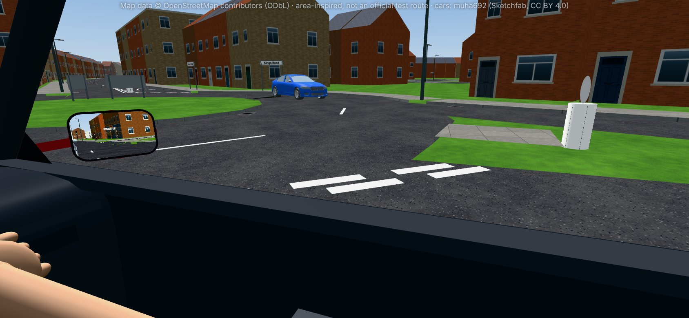<figcaption><b>Look right.</b></figcaption></figure>
      <figure>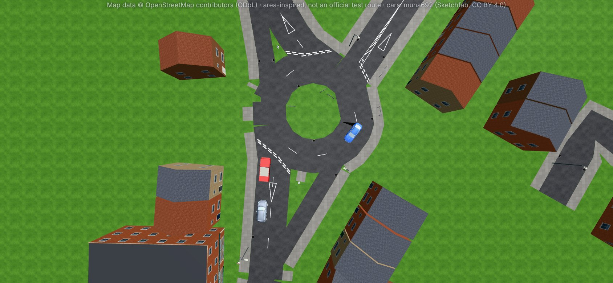<figcaption><b>Plan.</b></figcaption></figure>
      <figure>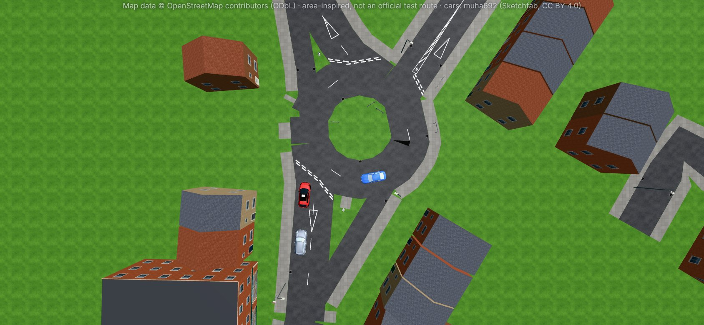<figcaption><b>Plan, 1 s later.</b></figcaption></figure>
    </div>
    <p class="answer"><b>Right answer:</b> look right, then give way. The blue car is already on the roundabout.</p>
  </div>

  <div class="stage">
    <div class="bar"><h3>Stage 3</h3><span class="t">t = 18 s, after "Give way"</span></div>
    <div class="shots">
      <figure><figcaption><b>Main view.</b> Blue car leaving along your exit.</figcaption></figure>
      <figure>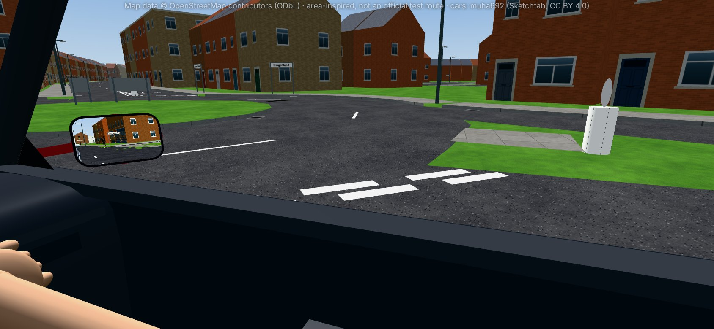<figcaption><b>Look right.</b> Clear.</figcaption></figure>
      <figure>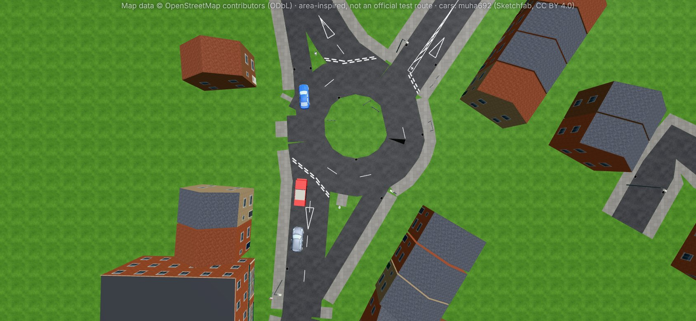<figcaption><b>Plan.</b></figcaption></figure>
    </div>
    <p class="answer"><b>Right answer:</b> look right again, then go, left signal still on.</p>
  </div>

  <div class="stack"><h4>Action buttons</h4>
    <div class="chips">
      <span class="chip">Interior mirror</span><span class="chip">Left mirror</span><span class="chip">Right mirror</span><span class="chip">Signal left</span><span class="chip">Signal right</span><span class="chip">Slow down</span><span class="chip new">Move to the right lane<small>new</small></span><span class="chip new">Look right<small>new</small></span><span class="chip">Give way</span><span class="chip new">Go<small>new</small></span>
    </div>
  </div>

  <div class="stack"><h4>Accepted sequences</h4>
    <div class="seqs">
      <div class="seq"><span>interior mirror</span><i>→</i><span>left mirror</span><i>→</i><span>signal left</span><i>→</i><span>slow down</span><i>→</i><span>look right</span><i>→</i><span>give way</span><i>→</i><span>look right</span><i>→</i><span>go</span></div>
      <div class="seq"><span>left mirror</span><i>→</i><span>interior mirror</span><i>→</i><span>signal left</span><i>→</i><span>slow down</span><i>→</i><span>look right</span><i>→</i><span>give way</span><i>→</i><span>look right</span><i>→</i><span>go</span></div>
      <div class="seq"><span>interior mirror</span><i>→</i><span>left mirror</span><i>→</i><span>slow down</span><i>→</i><span>signal left</span><i>→</i><span>look right</span><i>→</i><span>give way</span><i>→</i><span>look right</span><i>→</i><span>go</span></div>
      <div class="seq"><span>interior mirror</span><i>→</i><span>left mirror</span><i>→</i><span>signal left</span><i>→</i><span>slow down</span><i>→</i><span>look right</span><i>→</i><span>give way</span><i>→</i><span>look right</span><i>→</i><span>left mirror</span><i>→</i><span>go</span></div>
    </div>
    <p class="muted" style="font-size:14px">Right mirror in stage 1 is harmless (no fault, no credit). A left mirror before going is good practice, not required.</p>
  </div>

  <div class="stack"><h4>Distractors</h4>
    <ul class="plain">
      <li><b>Signal right:</b> right is for exits past twelve o'clock.</li>
      <li><b>Move to the right lane:</b> first exit keeps left (Highway Code rule 186).</li>
      <li><b>Go in stage 2:</b> the blue car is already on the roundabout and has priority.</li>
    </ul>
  </div>

  <div class="stack"><h4>Faults (recorded when they happen)</h4>
    <div class="table-wrap"><table>
      <thead><tr><th>When</th><th>Level</th><th>Feedback</th></tr></thead>
      <tbody>
        <tr><td>Go in stage 2</td><td><span class="lvl dangerous">dangerous</span></td><td><b>Pulled out in front of the blue car</b><span class="msg">Junctions, observation. It was already on the roundabout, a second or two from your path.</span></td></tr>
        <tr><td>Slow down before the interior mirror</td><td><span class="lvl minor">minor</span></td><td><b>Slowed without checking behind</b><span class="msg">Use of mirrors, change speed. The grey car was close. Recorded when you slowed; a later mirror check does not undo it.</span></td></tr>
        <tr><td>Signal left before both mirrors</td><td><span class="lvl minor">minor</span></td><td><b>Signalled before the mirrors</b><span class="msg">Use of mirrors, signalling.</span></td></tr>
        <tr><td>No left signal by the end of stage 1</td><td><span class="lvl minor">minor</span></td><td><b>No signal for the first exit</b><span class="msg">Signals, necessary. Would be serious if someone shown were misled; nobody is.</span></td></tr>
        <tr><td>Signal right</td><td><span class="lvl minor">minor</span></td><td><b>Wrong signal</b><span class="msg">Signals, correctly.</span></td></tr>
        <tr><td>Move to the right lane</td><td><span class="lvl minor">minor</span></td><td><b>Wrong lane</b><span class="msg">Positioning, lane discipline.</span></td></tr>
        <tr><td>Give way in stage 2 before a look right</td><td><span class="lvl minor">minor</span></td><td><b>Waited without looking</b><span class="msg">Waiting was right, but look first.</span></td></tr>
        <tr><td>Go in stage 3 with no look right after the wait</td><td><span class="lvl minor">minor</span></td><td><b>Out-of-date look</b><span class="msg">Your last look was before the blue car passed.</span></td></tr>
        <tr><td>Give way in stage 3</td><td><span class="lvl minor">minor</span></td><td><b>Missed a safe gap</b><span class="msg">Progress, undue hesitation. Only here: the ring is shown clear. Waiting in stage 2 is never hesitation.</span></td></tr>
      </tbody>
    </table></div>
  </div>

  <div class="flags"><h4>Uncertain, please confirm</h4>
    <ul>
      <li><b>Entry lanes and arrows on Kings Road northbound.</b> The map says two lanes with no arrows. For the first exit the answer is the same either way (left lane, signal left), which is why this sample uses the first exit. The second exit (A5) waits for your answer.</li>
      <li><b>Give way lines at the entry.</b> Drawn as expected at every roundabout entry; real markings not mapped.</li>
      <li><b>View right across the island.</b> Shown open (grass, no mapped walls). Real planting could hide the ring.</li>
      <li><b>How far left the first exit is.</b> From the map it is close to straight ahead; treated as a first exit (signal left, left lane).</li>
    </ul>
  </div>
</section>

<section id="engine">
  <h2>What the scenario engine needs</h2>
  <p>Both samples reuse the existing scenario screen, scoring, feedback and retry. Today the engine judges a set of taps with no order, so it cannot say "mirror before signal", move the picture on after "Give way", or record a fault at the moment it happens. A small addition does that, and every existing scenario keeps working unchanged:</p>
  <ul class="plain">
    <li><b>Stages:</b> each with its pictures, what each look or mirror shows, and which action moves the scene on.</li>
    <li><b>New buttons:</b> look right, look left, creep forward, sound horn, go, right lane, left lane, cancel signal.</li>
    <li><b>Rules checked when an action happens:</b> <code>before</code> (a mirror after the signal does not erase the miss), <code>fresh</code> (a look made since the stage began), <code>unsafe</code> (with its level), <code>hesitation</code> (only in a stage that shows a sustained gap; the 5 s idle timer arms only there), and <code>distractor</code>.</li>
    <li><b>Points unchanged:</b> correct +25, observation +5, minor −3, serious −10, dangerous −25. Pass with no serious or dangerous fault and up to 3 minors.</li>
  </ul>
</section>

<section id="questions">
  <h2>Your answers needed</h2>
  <ul class="plain">
    <li>Do S1 and S2 look and play the way you want? Picture style, number of pictures per stage, button count, fault levels.</li>
    <li>The real markings and view at the end of Kavanaghs Road (S1), and the Kings Road entry lanes and arrows at Queen's Road (S2, A5, E6).</li>
    <li>Lane arrows for each approach to the Brook Street roundabout (all of set D).</li>
    <li>Which mini-roundabout test 1 used (E1 or E2), and which road was "left before the station" (A3).</li>
    <li>Go-ahead for the engine addition above.</li>
  </ul>
</section>

<footer>Scenes built from map data © OpenStreetMap contributors (ODbL). Area-inspired, not an official test route. Car models: muha692 (Sketchfab, CC BY 4.0).</footer>
</main>

<dialog id="zoom"><p></p></dialog>
<script>
(()=>{
  const dlg=document.getElementById('zoom'),img=dlg.querySelector('img'),cap=dlg.querySelector('p');
  document.querySelectorAll('figure img').forEach(el=>el.addEventListener('click',()=>{
    img.src=el.src;img.alt=el.alt;cap.textContent=el.closest('figure').querySelector('figcaption').textContent;
    try{dlg.showModal()}catch{}
  }));
  dlg.addEventListener('click',()=>dlg.close());
})();
</script>
